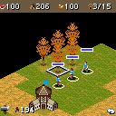

This was our first RTS bridge, and I love RTS games. I wanted to see how we’d do with one on the phone. Even at 128×128, this Nokia edition had units to select and orders that needed to mean something.L03AT02
One resource order.
The original cursor selected units, buildings and resources. Selecting empty land issued movement; repeated selection expanded the group. BUILD, UNITS and EVENT supplied separate original commands rather than decorative labels on a generic pad.AT02
In the retained run, we selected a Settler group, sent it to wood and watched the counter go from 100 to 206. Native command pause then held that counter steady while rendering stayed live. We could see what the command did in the game’s actual simulation.AT03

The original 128×128 game after the Settler resource order, with the wood counter at 206. Historical desktop output, not phone play.
Open the image for the full original view.
AT90Interfaces and identity.
Witcher supplied compatibility interfaces and Sonic Jump supplied the build capsule. The original game still kept its sound question, menus, class state and local records. An expected missing branding file was caught by the game before it continued to the menu; that was not the same thing as a failed startup.AT01AT04AT07
The later 0.1.1 change concerned icon resources. The worker order and command-pause evidence remained the earlier original-game route, with layout fixtures and phone acceptance kept separate.AT05AT08
About these records
The first-RTS motivation comes from the owner’s supplied project message. Original harvesting and pause are historical desktop execution, not a phone recording. This is specifically the Nokia 128×128 version 1.0.2. Records and game state are not relabeled as an exposed manual-save feature, and current framework layouts do not become live phone proof.
The receipts
Selected source lines, investigation notes and recorded feedback. Open a receipt for the original context and scope.
L03 / An RTS because Wakka loves RTS gamesOwner feedback
Source: Owner’s Age of Empires III project message, retained in project conversation context
Motivation stated when introducing the recovery, not a later gameplay acceptance.
We've never really done an RTS, an I fucking love them so I'm curious how we do.
AT02 / A phone keypad supplies real RTS ordersCheckpoint investigation notes
Source: Age_of_Empires_III_Bridge_v0.1.1_PRIVATE_CHECKPOINT.zip / Age_of_Empires_III_Bridge_v0.1.1_PRIVATE/README_FIRST.txt · selected lines 20–35
This is the original supplied Nokia J2ME 128x128 edition, version 1.0.2. No import, network connection or bridge launcher page is required. The original game retains its sound question, branding and native menus. CONTROLS D-pad: move the native cursor. Corner regions send the dedicated original 1/3/7/9 diagonals. The original Normal/Diagonal cursor setting is preserved. SELECT / 5: select units, buildings or resources; select empty land to move selected units. Repeated selection expands the native selection group. BUILD / LSK: open native construction controls or confirm a menu. UNITS / #: cycle military units and Town Centers. EVENT / 0: focus a recent event, otherwise cycle idle Settlers. COMMAND / *: pause simulation while issuing orders; press again to resume. MENU / RSK: the original game's menu/back input. ORIGINAL KEYPAD / D-PAD RETURN: one-tap inline switching. Android Back: clean up the original MIDlet and return to the caller/Omni.
AT03 / The workers harvest and command pause holds the simulationHistorical original-game host evidence
Source: Age_of_Empires_III_Bridge_v0.1.1_PRIVATE_CHECKPOINT.zip / Age_of_Empires_III_Bridge_v0.1.1_PRIVATE/README_FIRST.txt · selected lines 60–71
EVIDENCE AND LIMITS Original input orders sent a selected Settler group to wood at tile (14,12). The workers walked there and the wood counter rose from 100 to 206. Native command pause held the resource counter fixed while the renderer stayed live. See evidence/android-framework.txt (eight Android API 34 framework checks), evidence/verified-host/ and evidence/restart-complete/. Host checks execute the original game; framework UI tests defer guest boot. The layout PNGs combine that actual host framebuffer with the Android gameplay screen for layout QA. They are not on-phone gameplay screenshots. All 42 referenced MIDP/Nokia APIs were audited; the original optional branding scan reaches missing brand3.png, catches it and continues normally. This expected original endpoint is counted separately from execution faults.
AT90 / Historical image / Age of Empires IIIHistorical host capture
Source: Age_of_Empires_III_Bridge_v0.1.1_PRIVATE/evidence/rts-resource-order/12_harvest_result.png
Retained historical host output. Original emulator chrome, where present, is part of the unchanged source image. No phone capture or phone performance is inferred.
Unchanged historical image. Source member: Age_of_Empires_III_Bridge_v0.1.1_PRIVATE/evidence/rts-resource-order/12_harvest_result.png SHA-256: 7a02fdba2cc95783c1a35fc0552e38305d474b927baac51cf66ddc5da1b9a1c5 The original 128×128 game after the Settler resource order, with the wood counter at 206. Historical desktop output, not phone play. Scope: Historical original-J2ME host framebuffer; visually inspected, game only, zeroEXIF.
AT01 / Witcher supplied interfaces; Sonic supplied the build capsuleCheckpoint investigation notes
Source: Age_of_Empires_III_Bridge_v0.1.1_PRIVATE_CHECKPOINT.zip / Age_of_Empires_III_Bridge_v0.1.1_PRIVATE/docs/PROVENANCE.txt · selected lines 1–4
Compatibility foundation: private Witcher Crimson Trail m-witcher source from the existing Omni 0.5.0 private workspace. Reused resource/graphics/display/MIDlet interfaces; adapted only this project for Nokia MIDP 1.0, 128x128, ARGB4444, original font calls, RMS, lifecycle and OTA sound. Build-tool capsule reused from supplied Sonic Jump private checkpoint. Gameplay UI is the exact supplied Wakka Bridge Gameplay UI Kit 1.1.2 JAR, SHA256 318dc30cd0cee50c750daf1f5fdd0b077aafdbbf152b76b6b31392c081981c9c. No kit source changes. No original gameplay logic reconstruction or imported native RTS substitute.
AT04 / Original classes, local records and the absent manual-save optionCheckpoint investigation notes
Source: Age_of_Empires_III_Bridge_v0.1.1_PRIVATE_CHECKPOINT.zip / Age_of_Empires_III_Bridge_v0.1.1_PRIVATE/README_FIRST.txt · selected lines 49–58
EXECUTION AND SAVES All nine original classes execute through compatibility APIs. The only bytecode adaptations redirect resources and observe original caught faults. All eleven non-class entries from the original JAR are unchanged in the APK. Original packed graphics, maps, text and OTA melody are retained. The original system font is supplied by a small fixed-pitch compatibility font. Native RMS options/progress records are committed atomically. A changed native cursor setting was recovered after a fresh JVM launch. The supplied edition's mission menu has no manual Save Game entry; this bridge adds no synthetic save. Original content limits and trial messaging are unchanged.
AT07 / The original missing-brand scan continues to the menuHistorical original-game host report
Source: Age_of_Empires_III_Bridge_v0.1.1_PRIVATE_CHECKPOINT.zip / Age_of_Empires_III_Bridge_v0.1.1_PRIVATE/evidence/rts-resource-order/final-report.txt · selected lines 11–14
Events 1792672615625 Display e 1792672659655 MISSING RESOURCE /brand3.png 1792672659658 Original branding scan reached absent brand3.png; original catch continues to menu
AT05 / The later edition only updates icon resourcesCheckpoint investigation notes
Source: Age_of_Empires_III_Bridge_v0.1.1_PRIVATE_CHECKPOINT.zip / Age_of_Empires_III_Bridge_v0.1.1_PRIVATE/README_FIRST.txt · selected lines 1–6, 12–13
ICON UPDATE ONLY Base: newest signed v0.1.0 OMNI_READY_PRIVATE APK. New antique-gold Roman III, crimson shield and Maltese cross launcher art. The same resource also supplies the gameplay header icon. Android versionCode 2, versionName 0.1.1; package and signing identity retained. All code DEX, original game payloads, controls and Omni import/preparation metadata preserved byte for byte. Only the retained icon hash changes in Omni export metadata. [... selected excerpt ...] VERIFICATION Signature/update identity, exact ZIP-entry comparison, original/prepared payload equality, all strict resource inventory hashes, manifest version and icon dimensions. No new on-device gameplay test is claimed for this resource-only update.
AT08 / Fresh game class state and current phone scopeCheckpoint investigation notes
Source: Age_of_Empires_III_Bridge_v0.1.1_PRIVATE_CHECKPOINT.zip / Age_of_Empires_III_Bridge_v0.1.1_PRIVATE/README_FIRST.txt · selected lines 73–76, 82–83
Physical Android gameplay, native OTA sound, thumb comfort, actual Downloads visibility, thermal behavior and full-campaign completion remain unverified. The host audio backend checks and preserves the original OTA request; it does not establish audible Android playback. [... selected excerpt ...] The guest DEX is read-only in Android's code cache and loaded afresh per session, so re-opening a bridge does not reuse stale original game class statics.